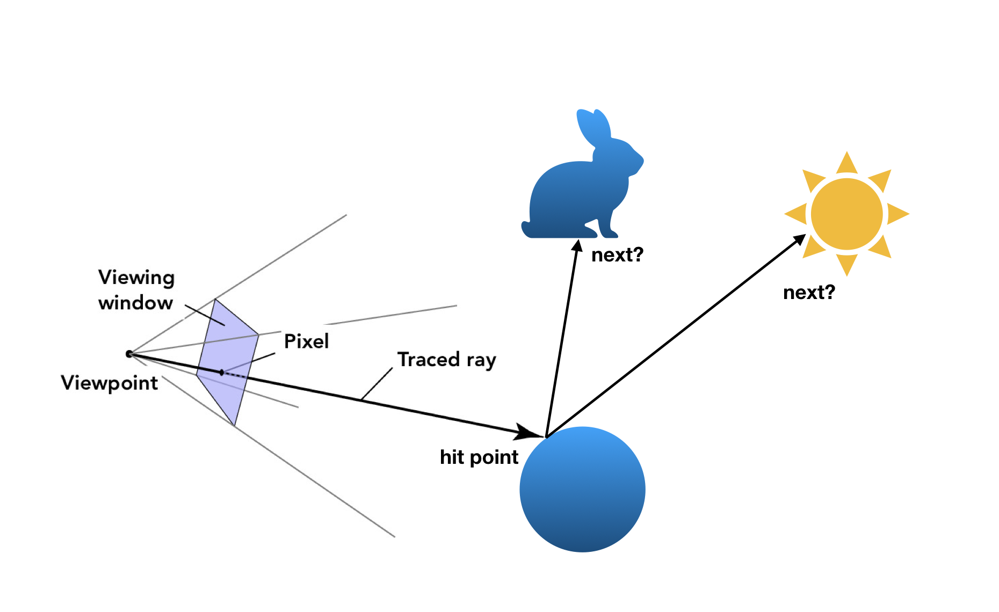
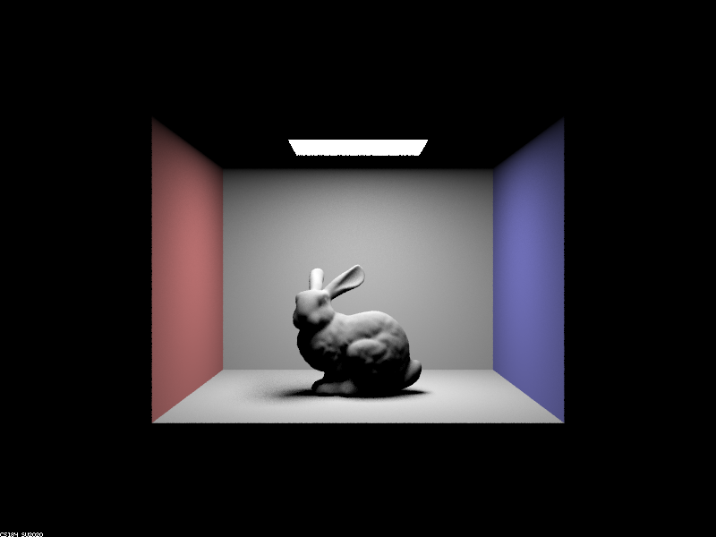
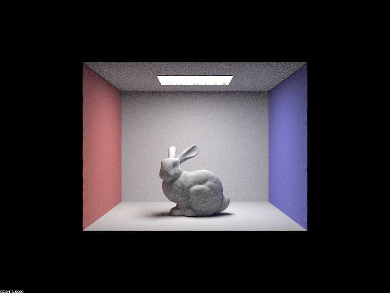
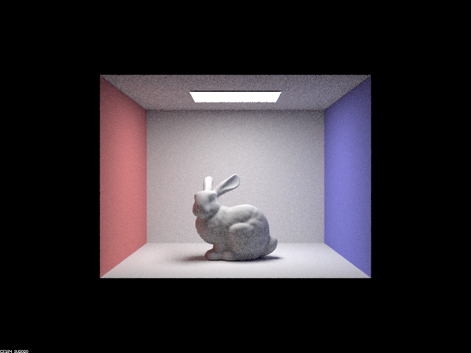
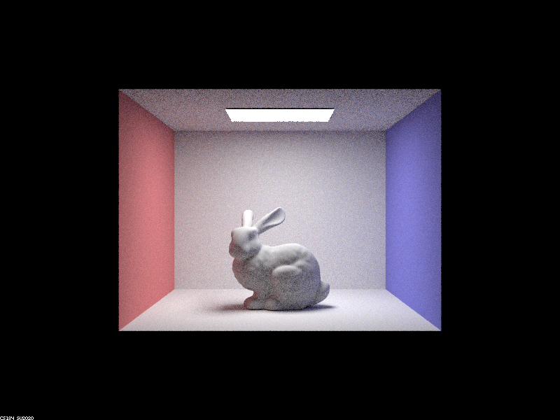
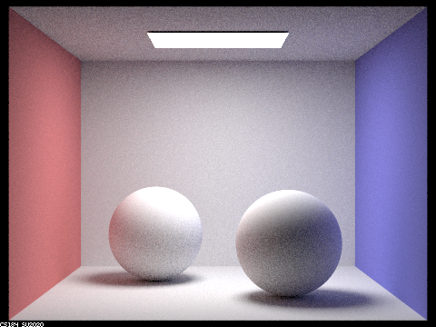
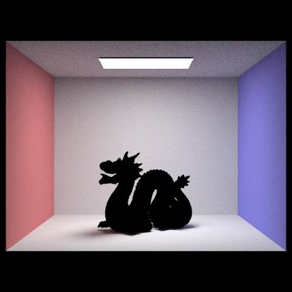

Task 1: Sampling with Diffuse BSDF
Your task
In this task, you will implement function DiffuseBSDF::sample_f to represent a diffuse material that reflects incoming light equally in all directions on the hemisphere. Reference the relevant lecture slides.
In Part 3, you implemented DiffuseBSDF::f, which takes as input the incoming solid angle wi and the outgoing solid angle wo and returns f(wi -> wo).
The function DiffuseBSDF::sample_f is slightly different; it also samples the incoming ray. It takes as input the outgoing solid angle wo and pointers for wi and pdf. It performs two tasks:
DiffuseBSDF::sample_frandomly samples an incoming ray direction, settingwito the sample direction andpdfto the sample probability.DiffuseBSDF::sample_freturnsf(wi -> wo)for the sampledwiand the inputwo
How do we sample the incoming ray direction? If you look in bsdf.h, you'll see that DiffuseBSDF contains a sampler object. This is similar to the sampler used in Part 1, Task 2 to generate pixel samples. This Sampler draws 3D samples from a cosine-weighted hemisphere distribution.
Use the Sampler to sample an incoming direction, which you'll write into wi. Make sure you also store the pdf of the sample that was chosen.
Like DiffuseBSDF::f, DiffuseBSDF::sample_f will still return the proportion of incoming light scattered from wi to wo.
Notes:
- If you're confused about why we sample
wiinstead ofwoin thesample_ffunction, recall that we are tracing inverse paths (from the camera into the scene).wois the ray going from the surface point to the camera. - The albedo of the material is stored in its
reflectanceparameter. This is a Vector3D in order to describe the reflectance for R, G, and B channels simultaneously.
Task 2: Global Illumination
In Part 3, we wrote our direct lighting function, but now we want to render images with full global illumination. Much of the visual richness in rendering comes from indirect lighting effects.
For this task, your job will be to implement the functions sample_f and at_least_one_bounce_radiance, and finish the function est_radiance_global_illumination in src/pathtracer/pathtracer.cpp.
- The function
est_radiance_global_illuminationis called to get an estimate of the total radiance with global illumination arriving at a point from a particular direction (e.g. on the image plane and going towards the image's center of projection). At the end of this part, this function will actually implement full global illumination. - The function
at_least_one_bounce_radianceis the main implementation work for this Part 4. At a high level, it should call theone_bounce_radiancefunction, and then recursively call itself to estimate the higher bounces. This recursive call should take one random sample of a direction based on the BSDF at the hit point, trace a ray in that sample direction, and recursively call itself on the new hit point.
At a high level...
When we first enter this function, a ray left the camera and intersected the scene. We want to trace multi-bounce (inverse) paths, so we need to figure out where to go *next*.
Recall that this next location is actually where the light came from in order to arrive at the original intersection point. In direct lighting, we only cared if this next location was a light -- but now it could be anything!
If the next location is an object, then we need to estimate how much light arrived at *that* location -- and therein lies the recursion.

Make sure you take a look at the pseudocode from the lecture slides on global illumination.
Details: how do we stop infinite recursion?
Recall that our goal is to integrate over all paths of all lengths -- but this is computationally infeasible.
If energy dissipates, the contribution of higher bounces decreases exponentially.
- Russian Roulette provides us an unbiased method of random termination.
- In theory, the probability of terminating can be arbitrary -- but we suggest using a termination probability between 0.3 or 0.4.
- Remember that depending on the value you choose, your renders may look slightly different from ours or your peers -- but are the same in expectation.
- The
max_ray_depthfield tells you how many maximum bounces your ray should take. If it is> 1, then indirect illumination is "turned on" and we will always trace at least one indirect bounce (regardless of Russian Roulette). - If the new ray doesn't intersect the scene, then it doesn't bounce off anything, and can't recurse.
Code that will be useful
As in part 3, the starter code gives you:
o2wandw2o, matrices for object-to-world space and world-to-object space transformations, respectively.- These were created using the input
isect's normal to calculate a local coordinate space for the object hit point. In this local space, the normal is (0,0,1)(0,0,1)(0,0,1), so that is "up". - Note that these are each the transpose and inverse of the other (they're orthonormal!)
- These were created using the input
hit_p, the hit point of the ray, for convenience (note which coordinate space this is in).w_out, the outgoing direction in the local object frame.
Other functions that you will probably want to call:
-
coin_flip(double p), fromrandom_util.h- This function returns
truewith probabilityp
- This function returns
-
BSDF::sample_f(Vector3D& w_out, Vector3D* w_in, double* pdf)- Recall from Part 3: This function requests the outgoing radiance direction
w_outand returns the BSDF value as a Vector3D as well as 2 values by pointer. The values returned by pointer are- the probabilistically sampled
w_inunit vector giving the incoming radiance direction (note that unlike the direction returned bysample_L, thisw_invector is in the object coordinate frame!) and - a
pdfdouble giving the probability density function evaluated at the returnw_indirection.
- the probabilistically sampled
- Recall from Part 3: This function requests the outgoing radiance direction
-
BVHAccel::intersect(Ray&, Intersection*) -
at_least_one_bounce_radiance(Ray&, Intersection&)-- because of recursion! -
EPS_F, the epsilon offset
Notes
- For the ray depth cutoff to work, you should initialize your camera rays' depths as
max_ray_depthinraytrace_pixel, and modify this field with each recursive call. - Remember that when generating rays originating from an existing hit point, offset the range of valid intersections with the value
EPS_F. - Don't forget all the multiplicative and normalization factors, as in Part 3
- Here, we additionally need to normalize by the continuation probability!
- Make sure to keep track of when you are using world coordinates and when you are using local coordinates
Implementation tip
- Start by implementing global illumination without russian roulette, and then once it is working, implement russian roulette. Without russian roulette, our implementation produces the following images for maximum ray depths of 1,2,3,5, and 32:
| m=1 | m=2 | m=3 | m=5 | m=32 |
|---|---|---|---|---|
|  |  |  |  |
Nice work!
You still can only render diffuse BSDFs until completing the first part of Project 3-2, however, you should now see some nice color bleeding in Lambertian scenes. You should be able to correctly render images such as
./pathtracer -t 8 -s 64 -l 16 -m 5 -r 480 360 -f spheres.png ../dae/sky/CBspheres_lambertian.dae

(The last command takes 59 seconds for the reference solution on Hive)
NOTE: Objects that do not use diffuse BSDFs will look completely black like in the image below. This is okay!

Here is a list of some scenes that you should be able to render correctly.
/dae/sky/CBbunny.dae
/dae/sky/CBempty.dae
/dae/sky/CBspheres_lambertian.dae
/dae/sky/bench.dae
/dae/sky/blob.dae
/dae/sky/bunny.dae
/dae/sky/dragon.dae
/dae/sky/wall-e.dae
Remember you will be running experiments for the write-up -- since the renders will be taking some time, it's a good idea to start rendering now!